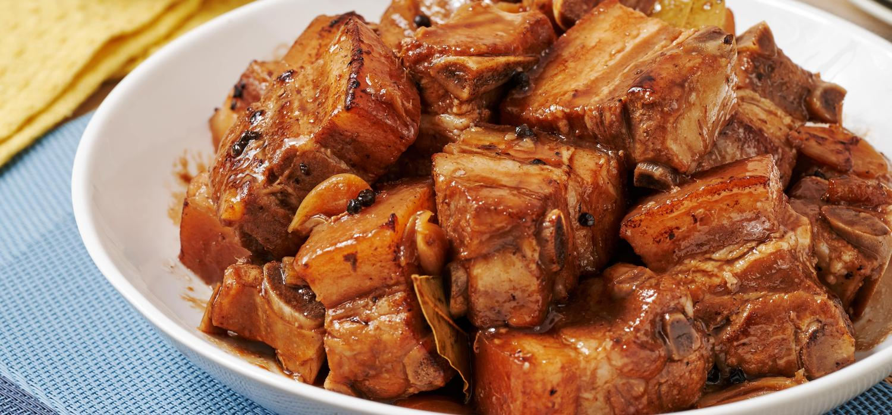

Adobo Recipe

Description
In English, adobo means “vinegar-braised.” Evenly-cut chunks of meat
are first seared in hot fat or oil until they brown. Braising liquids,
such as vinegar and soy sauce, are then added, and the mixture is left
to simmer over low heat. The moist heat gently penetrates the meat to
break down the collagen and tough fibers, resulting in a fork-tender
texture with a thick, flavorful sauce. It's a cooking method
that's time-consuming but undeniably rewarding.
Source
Ingredients
- 2 tsp oil, canola
- 6 cloves garlic, crushed
- 1 pc onion, sliced
- 750 g chicken cut ups
- 250 g pork liempo cut into 1-inch pieces
- 3 tbsp vinegar
- ¼ cup soy sauce
- 2 pcs bay leaves
- 1 tsp whole black peppercorns, slightly crushed
- 1 cup water
- 1 tsp brown sugar, packed
- 1 pc Knorr chicken cube
Steps
- Begin by choosing a pot that's big enough to fit the chicken
and pork adobo. Bring the pot to medium high heat and sauté the
garlic and onions in hot oil.
- Add the chicken pieces into the pot and sear on all sides.
Searing means to brown the meat in high heat. This adds flavour and
color to the meat. Make sure that the meat pieces are not wet or you
will not achieve the desired color you are looking for. You can do this
in batches so you do not overcrowd the pot because the juices from the
meat will run out and thus prevent the browning effect of the meat.
Add the pork and sear as well.
- The next step is to pour the vinegar, soy sauce, bay leaves,
pepper, water, Knorr Chicken Cube. Bring this up to a boil over high
heat then lower the fire to a simmer. Do not cover your pot or you
will end up with a raw vinegar taste. This will take about 20 minutes.
- For a more flavour-filled adobo, remove the chicken and pork pieces
from the pot and fry this separately in another pan for about
2-3 minutes. When done, throw in the fried meat pieces into the
pot, add the sugar and simmer for another 6 minutes or until the
sauce has reached a syrup-like consistency. To add fiber into your
dish, add sliced Bok-Choi last and cook for 2 minutes.
- This all-time classic dish is now ready to be enjoyed by the whole
family with a bowl of steaming rice.